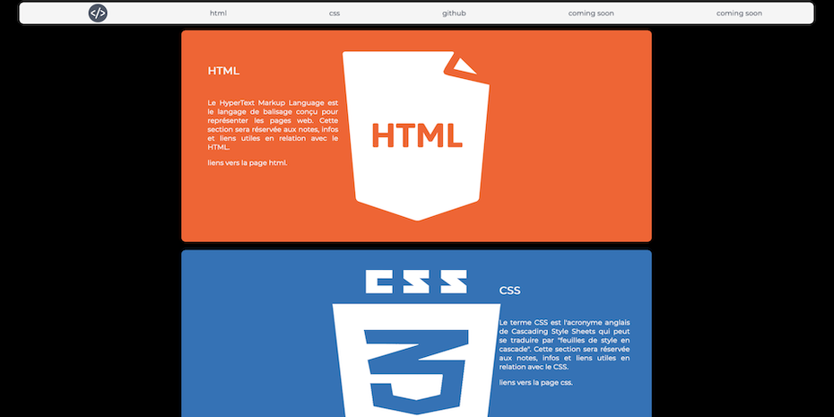

MES PROJETS RÉALISÉS

Mon github
Le lien vers mon GitHub et mes repository.
Mon momento
Le momento réalisé lors de ma formation.

Juien TANGUY - née le : 24/05/1990
Soissons, France
mail : j.tanguy24@gmail.com
Passionné depuis toujours par le domaine de l’informatique et du développement, J’ai entrepris début
2020 une reconversion professionnelle dans le but de devenir développeur web.
Mes différentes expériences professionnelle m’ont appris à travailler seul ou en équipe. Je suis quelqu’un de rigoureux et motivé dans mon travail.
Au cours de mon cursus scolaire, j’ai était diplômé d’un BEP logistique et commercialisation et d’un
bac professionnel logistique.
Je suis passionné par les nouvelles technologies, le sport et la moto.
Suite à mes études, j’ai commencé à travailler en intérim, d’abord pour une société de grande distribution entre 2009 et 2010, puis en 2010 pour une entreprise spécialisée dans la fabrication de produits chimiques et enfin de début 2011 à début 2012 dans une société gérant le stocks de différents clients en région parisienne.
Durant ces années d’intérims j’ai occupé des postes de préparateur de commandes, réception des commandes et cariste.
En avril 2012, j’ai été embauché par le centre hospitalier de Soissons, au service de gestion des dossiers médicaux. En avril 2014 j’ai intégré le service des consultations externes de médecine pour occuper le poste de brancardier. J’y ai été stagiarisé en 2015 puis titularisé en 2016. A ce poste, mon travail consistait à aller chercher les patients dans leurs chambres et de les emmener lors de consultation ou d’examen médical en prenant soin de ne pas oublier les documents ou dossiers nécessaires à la réalisation de celui-ci.
Mon rôle etait de déplacer les patients dans les meilleurs conditions en choisissant le moyen le plus adapté à leur transport (lit, chaise roulante), mais également un rôle de bienveillance en rassurant les patients angoissés sur la nature d’un examen qu’ils ne connaissaient pas ou appréhendaient. J’ai occupé ce poste jusqu’à mon départ pour ma formation de développeur web en mars 2020.
Lors de ma formation à la manu, j’ai suivi un programme intensif de 6 mois qui à exigé une forte mobilisation. J’y ai appris à toujours m’investir pour rendre un travail soigné et de qualité. Cela m’a permis d’apprendre a maquetter une application web et mobile, à concevoir une interface utilisateur stable, dynamique et gérant du contenu e-commerce. Mais également à concevoir des algorithmes, administrer une base de données et déployer des sites web modernes, stables et sécurisés. J’y ai également appris a travailler seul, mais aussi en équipe sur divers projets professionnels.
Lors de ma formation de développeur web, j’ai appris a maitriser le html et le css.
J’ai également appris plusieurs langages de programmation comme le javaScript pour ameliorer l'experience utilisateur de mes applications.
Ou encore le php pour le traitement d'informations en provenance de formulaires ou moteurs de recherche
je travaille toujours en adoptant un design responsive afin de rendre mes applications les plus adaptées a toutes les tailles d'écran tout en garantissant la meme facilitée d'utilisation pour ne pas diminuer l'experience utilisateur.
Je sais travailler seul, mais aussi en équipe et c’est quelque chose que j’ai appris à faire et à apprécier au cours de mes différents postes tout au long de ma carrière et lors de ma formation. Devoir alterner les deux est, je trouve, un bon moyen de ne pas se relâcher professionnellement pour être en mesure de rendre un travail de qualité qui pourra aider l’équipe a atteindre ces objectifs. Je suis autodidacte et sais faire les recherches necessaires pour trouver la solution a un probléme pour travailler de maniére efficace.
Le lien vers mon GitHub et mes repository.
Le momento réalisé lors de ma formation.